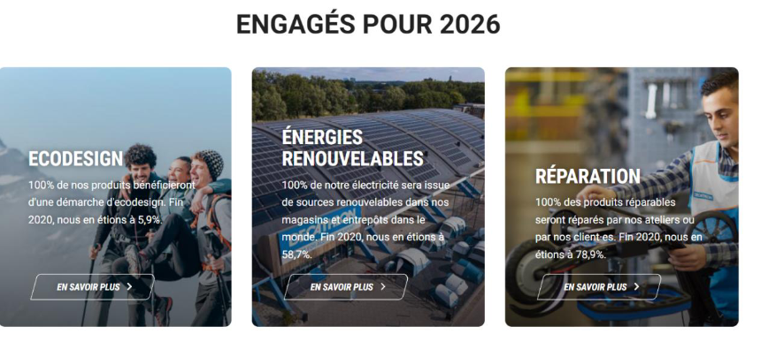

Le marché du sport est en pleine expansion, malgré la crise économique, ce marché ne cesse de se développer. Loisir préféré des Français, le sport représente un vecteur de valeurs morales et émotionnelles et aide à l’insertion dans une société de plus en plus fracturée. Analysant de plus près afin de comprendre les grands dynamismes de ce marché. Comment les plus grands acteurs de ce marché ont réussi grâce aux numériques à s’imposer face à une concurrence toujours plus rude, et d’autant plus intégrer une dimension écologique dans leur choix décisionnel.
Le marché du sport reste toujours aussi résilient et dépasse toutes les prédictions malgré le contexte sanitaire. En 2020, le marché du sport a su résisté face à la Covid-19, 11 000 entreprises se sont créées dans cette filière. La vente de vélo a connu un essor fulgurant. Ce secteur a réussi l’exploit qu’aucun autre secteur n’a réussi à réaliser pendant la crise mondiale : créer de l’emploi !
1 Français sur 2 déclare faire du sport plus d’une fois par mois et 72 % d’entre eux pratiquent au moins une fois par semaine. Aussi, les français dépensent en moyenne 253 euros par an dans des articles de sport. Le sport est ancré dans le quotidien des Français, cela explique le comportement d’un marché aussi concurrentiel.
De nouvelles opportunités se présentent malgré une crise économique qui est toujours d’actualité. Les acteurs de ce marché estiment être convaincus par la capacité de renouer avec une croissance à moyen terme. D’après le groupe BPCE 44% des chefs d’entreprise pensent que leur business model va devoir significativement s’adapter aux mutations actuelles et 15% pensent même qu’ils devront complétement se réinventer.
Pour conclure, nous pouvons aisément affirmer que ce marché à de belles perspectives d’avenir, en effet, la France accueillera le plus grand évènement sportif au monde, les Jeux olympiques et Paralympiques de 2024, La capitale se prépare à devenir la vitrine du monde qui lui permettra de rayonner davantage à l’international
En raison du contexte économique particulier de ces deux dernières années, le marché du sport se trouve confronté à de nouveaux défis. Ce marché en pleine mutation cherche constamment à diversifier et à élargir son offre, afin de répondre aux nouvelles habitudes de consommation. Les grandes et moyennes surfaces multisports (Decathlon,Intersport...) sont en position de force sur le marché qui est relativement concurrentiel (environ 60% de parts de marché). Les ventes en ligne pèsent à présent près d'un quart du marché (23,3%) contre 17,4% un an plus tôt.
L’utilisation globale des applications de sport ou de santé a explosé +60 % durant le premier confinement. Ces chiffres témoignent d’une place importante qu’occupe le sport en France. Ces grands groupes sont principalement concurrencer par des pures players c’est-à-dire des entreprises exerçant leur activité commerciale uniquement en ligne (Amazon, Cdiscount...) ,et par les Brick and Mortar, des entreprises proposant uniquement leurs produits dans un point de vente physique.

Là où l’innovation et l’attractivité prix jouent un rôle prédominant, les big four (Décathlon, Go sport, Intersport et sport2000) se sont imposés comme leader sur ce marché. Ces enseignes ont réussi à capter et à fidéliser durablement les ménages
français pour les raisons précédemment citées. Le développement de leur canal digital ainsi que leur marketing et communication les rendent encore plus puissants.
Décathlon a toujours revendiqué une mission claire, permettre à chacun d’accéder au sport grâce au positionnement prix de leur article. Décathlon utilise sa R&D pour répondre aux besoins des consommateurs et le communique à ses équipes afin de créer des produits toujours plus efficaces répondant aux besoins des consommateurs
.La digitalisation de leur point de vente permet aux clients de comparer tous les produits en même temps (utilisation, prix, disponibilité). Le consommateur exprime aujourd’hui des aspirations plus fonctionnelles (confort, solidité, facilitée d’utilisation) et grâce à ces attentes les grands acteurs de ce marché créent de l’innovation pour prendre en compte justement ces aspirations afin d’être toujours plus compétitives.
Une des innovations du groupe décathlon est la technologie RFID (Radio Frequency Identification), méthode permettant de mémoriser et de récupérer des données à distance.
Toujours sur une volonté de faire gagner du temps aux usagers afin de cultiver un avantage concurrentiel, en effet un lecteur RFID peut en effet, lire plusieurs centaines d’’étiquettes à la minute, finie le scan du code-barres.
Par exemple, il suffit de déposer tous ses articles dans un bac pour se voir immédiatement afficher sur un écran, son contenu et le montant total.
La présence de ces groupes sur les réseaux sociaux est également une stratégie bien réfléchie,
effectivement une présence digitale accrue permet un gros impact sur le commerce. En amont, il est donc important d’établir une grande stratégie éditoriale afin de cibler correctement les utilisateurs.
Le développement des réseaux sociaux à donner lieu à une segmentation de plus en plus définie, par exemple le groupe décathlon a sorti une campagne ciblant les mamans, dans leur site internet, on retrouve des sous-catégories telles que “Maman Green” Une volonté d’allier des produits responsables à leur activité, on peut également retrouver “Maman fun”, “Maman Urbaine”. Répartion de marché Les grandes surfaces multi sports (décathlon,intersport ...)
La transformation digitale passe également par l’innovation, depuis peu, nous retrouvons des produits que les consommateurs peuvent tester à distance à l’aide de la réalité virtuelle, par exemple, il est possible de tester des tentes de chez soi par l’intelligence artificielle. Au sein des magasins, nous retrouvons également des casques à réalité virtuelle

La transformation digitale passe également par l’innovation, depuis peu, nous retrouvons des produits que les consommateurs peuvent tester à distance à l’aide de la réalité virtuelle, par exemple, il est possible de tester des tentes de chez soi par
l’intelligence artificielle.
Au sein des magasins, nous retrouvons également des casques à réalité virtuelle.
Cette crise a accru les attentes sur les questions du made in France, les attentes liées à la question du « Made in France » ont explosées depuis la crise sanitaire, mais aussi parce que les français se trouvaient contraints à se tourner vers des
produits français, ces attentes s’associent à la question de l’environnement, de l’éco responsabilité, du recyclage.
Les consommateurs sont plus enclins à privilégier des enseignes qui intègrent une dimension écologique à leur mode de fabrication.
La demande est claire, une communication aiguë sur l’éco-responsabilité.
Selon EY Future Consumer Index, 67 % des consommateurs déclarent qu’ils sont plus susceptibles d’acheter auprès de marques capables de communiquer de manière transparente sur ces questions, en effet une entreprise en abordant une démarche responsable réduira significativement son empreinte carbone et économisera les ressources naturelles en garantissant la qualité des produits, ou encore la limitation de la pollution produite. Cette démarche vient peu à peu à entrer dans les choix décisionnels des consommateurs.
Les nouveaux produits sont de plus en plus alignés dans une démarche écoresponsable et plus respectueuse de l’environnement. Le secteur du sport prône des valeurs plus éthiques pour être en phase avec les nouveaux enjeux environnementaux.
Une campagne de sensibilisation lancée par Intersport #RRR, va dans cette démarche-éco- responsable afin d’offrir une deuxième vie aux produits, elle vise à sensibiliser les citoyens aux bons gestes à adopter pour réparer, réutiliser et recycler le textile. Par exemple, d'ici 2024, l’intégralité des produits Adidas sera fabriquée à partir de plastiques recyclés.
Le secteur du sport adapte son offre pour répondre aux contraintes sociales et environnementales. Les consommateurs sont plus sensibles à ces valeurs et souhaitent les retrouver dans les produits qu’ils achètent. La provenance des tissus, les ressources naturelles et la rémunération équitable sont devenues des arguments de vente qui attirent de nouveaux consommateurs. Il ne suffit pas que le produit soit beau et élégant, il doit aussi être vertueux.
Le billard est un jeu d'adresse à un ou plusieurs joueurs qui se pratique sur une table, recouverte d'un tissu (souvent vert ou bleu) et bordée de bandes, sur laquelle on fait rouler des boules que l’on frappe à l’aide d’une queue.
Ce jeu est
idéal afin de mixer les genres et les âges.En plus d’être bénéfique pour l’esprit et le corps, le billard permet de passer un moment inoubliable et de complicité. Ce jeu peut se pratiquer en compétions contre des adversaires ou bien entre amis
ou en famille. Dans un contexte scolaire, organiser ce type d’événement permettra aux étudiants de développer leur attention et concentration.
Ce jeu demande énormément de stratégie, parfait pour des étudiants en informatique n’est-ce pas
?
Ce marché ne fournissant pas suffisamment d’information pour que cette partie soit traitée correctement, voici quelques informations intéressantes :
Billard Toulet est un des principaux leaders de ce marché, en 2021, elle produit un chiffre d’affaires de 4,45 millions d’euros. L’un de ses challengers Eurobillard, en 2019, quant à elle, réalise un chiffre d’affaires de 2,77 millions d’euros, le total du bilan a augmenté de 3.21 % entre 2018 et 2019.
La taille du marché mondial des tables de billard a été évaluée à 188,76 millions en 2020, les prévisions estiment que ce marché atteindra 257 millions d’euros en 2028.
On observe un taux de croissance annuel composé (TCAC) de 5.4 % de 2021 à 2028.
Ce sport séduit grâce aux compétions qui regroupent un grand nombre de téléspectateurs, les gains de 221.000 euros top mondiaux ont été attribués au Belge Frédéric Caudron. La Fédération Française de Billard est l’organisatrice des compétitions et du championnat français, aujourd’hui plus de 500 billards sont mises à disposition pour répondre aux exigences des meilleurs joueurs mondiaux. La France joue donc un rôle de leader sur le marché du Billard.